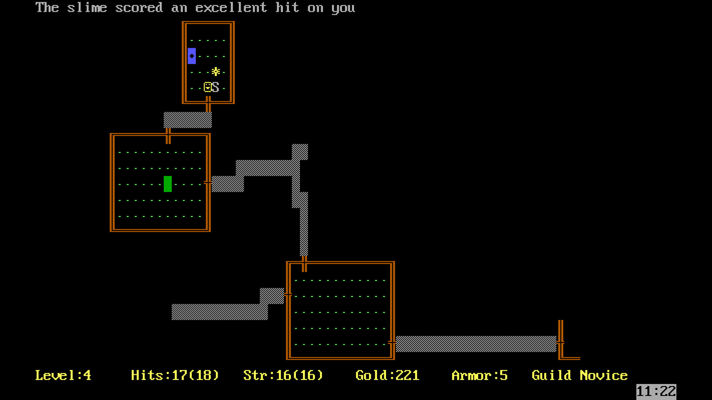
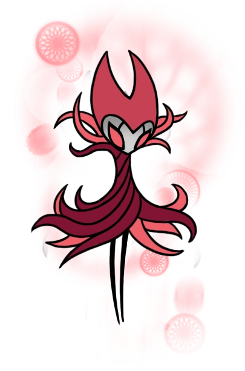
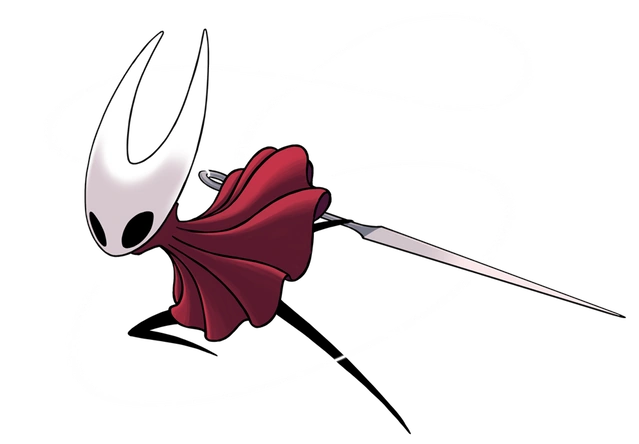
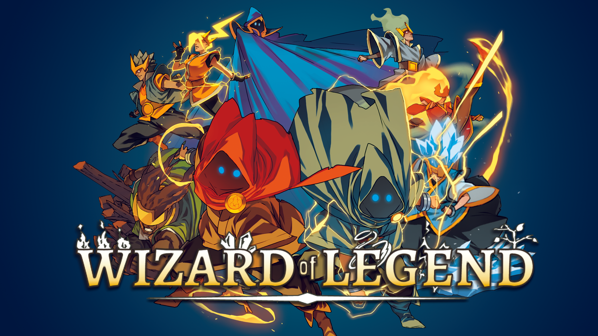
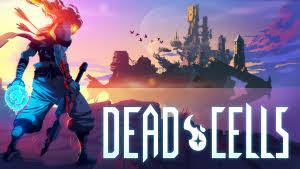

o melhor gênero de jogo do universo:
Roguelites
O que são?
Roguelites, tem esse nome por causa do jogo rogue de 1980, foi ele quem deu início a esse tipo de jogo.
Outra coisa que se destaca nesses jogos é o permadeath(morte permanente), ou seja, se você morre, você tem que jogar tudo denovo(e denovo e denovo).
Mas porque isso não torna esses jogos repetitivos e desgastantes? Simples:
Roguelites são jogos com geração procedural, ou seja, um software que gera mapas de forma aleatória no seu jogo, gerando um jogo único para cada jogador.Além disso, diferente dos Roguelikes(os antecessores dos roguelites), entre cada Run(como os jogadores comumente chamam as partidas) você pode desbloquear novas arma/itens ou novos upgrades, que você pode combinar durante a run e adaptar ao seu modo de jogo ao qual você se sente mais confortável(as famosas ).

A imagem ao lado é do jogo He is Coming, mostrando alguns itens que foram ou podem ser desbloqueados a partir de missões.
Roguelites também possuem chefes, que geralmente são localizados no final de cada nível, e assim como todos os inimigos do jogo, os chefes ficam mais difíceis a cada nível que você passa, além de ja terem uma dificuldade alta, principalmente quando você os encontra pela primeira vez.Porém, esses chefes sempre tem um padrão, mesmo que muito difícil de decorar, o que estimula o jogador a aprender a jogar, e não só apertar uns botões.
História
Alguns roguelites também possuem uma história por trás, mesmo que curta, são ótimas e intrigam o jogador a continuar jogando, como por exemplo Hades.

O jogo Hades conta a história de Zagreus, o príncipe imortal do submundo, que tenta escapar do reino de Hades, para alcançar o Monte Olimpo.O jogador descobre novos elementos da história através de diálogos, cenas e encontros com personagens do submundo e do Olimpo.
Existem diversas histórias contadas nesses jogos, com tramas, objetivos e desfechos diferentes, o que interessa o jogador a procurar, além do final do jogo, resquícios da história.
Rejogabilidade
Mesmo tendo começo, meio e fim, roguelites são altamente rejogáveis, alguns por terem outras histórias, mas em geral, o jogo te recompensa por finalizar ele, seja com upgrades especiais e armas novas ou até com um novo modo de jogo, tazendo mecânicas e estilos de jogo novos para jogar. Alguns roguelites também possuem uma extensa gama de níveis secretos, com novos chefes e inimigos para derrotar, alguns até trazem novos personagens jogáveis, com habilidades ou armas diferentes.
Chefes
Mesmo ja dito anteriormente sobre os chefes, eles precisam de uma parte so para eles. Cada chefe é único e corresponde muito bem ao seu nível, idependente do jogo, os chefes tem mecânicas e padrões diferentes uns dos outros, além de claro, serem muito bonitos visualmente.
Alguns chefes são tão icônicos que se tornaram parte da cultura gamer pela sua dificuldade ou relevância, como o Nightmare Grimm e a Hornet de Hollow Knight.
Quais são os melhores?
Existem inúmeros jogos roguelites disponíveis para você jogar, todos são muito bons e tem suas peculiaridades, mas na minha opinião, esses são os melhores:
- 1º: Enter The Gungeon
-
Enter the Gungeon é um jogo no qual pessoas arrependidas vão em busca da absolvição pessoal, chegando ao lendário tesouro final do Balabirinto: a arma que mata o passado.
Além de ser um jogo com uma variedade de armas, na qual cada funciona de um jeito diferente, o jogo conta com diversos personagens, no qual, cada um começa com armas e items diferentes, além de que cada um possui um final diferente, por padrão são 5 personagens iniciais, sendo um deles jogavel apenas no modo cooperativo, e mais 4 desbloqueáveis ao longo da jogatina.
Esse jogo se destaca pela variedade de chefes que podem aparece em um nível, sua dificuldade, os niveis secretos e variedade de coisas que você pode fazer, como por exemplo irritar o comerciante da loja até ele literalmente
matarvocê.Enter the gungeon tem sua continuação, Exit The Gungeon, mas sendo sincero, não chega aos pés do primeiro jogo.

- 2º: Wizard of Legend
-
Mesmo não sendo muito conhecido, Wizard of Legend foi o primeiro roguelite que eu joguei.
A história de Wizard of Legend gira em torno das Provas do Caos (Chaos Trials), um evento anual realizado no Reino de Lanova pelo Conselho de Magia, onde os magos mais habilidosos competem para se tornarem o Mago da Lenda.
O jogo possui diversos feitiços, de diversos elementos, o que possibilita o sistema elemental do jogo, os elementos são divididos em Fogo, Água, Terra, Ar, Relâmpago e o mais forte, Caos, os cinco primeiro reagem entre si em questões de resistencia ou fraqueza.
Diferente do primeiro lugar, esse jogo não possui muitos chefes, porém tem um modo cooperativo muito bom e melhor do que enter The gungeon, além de um modo PvP(jogador vs jogador) incrível que me tirou boas risadas.
 - 3º: Dead Cells
-
Mesmo jogando pouco desse jogo, devo admitir que ele merece o pódio.
Em Dead Cells o jogador assume o papel de um homúnculo que controla corpos em uma ilha amaldiçoada. O objetivo é descobrir o que está acontecendo na ilha e desvendar os mistérios por trás de uma praga que assola o local.
O jogo possui uma infinidade de armas, roupas e upgrades, além da grande variedade de níveis e chefes para enfrentar, a melhor parte é que Dead Cells é bem extenso e rejogável, trazendo uma gama de possibilidades para sua jogatina.

Vídeo
Neste vídeo, é comentado sobre os roguelikes em geral, porém é possivel entender a difernça dos dois nesse vídeo.